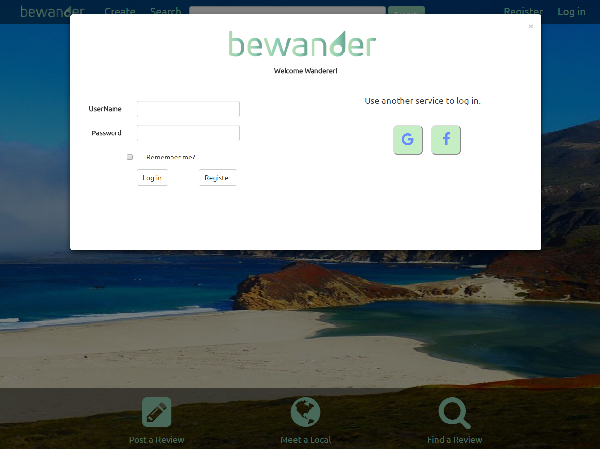

Bewander

First I made a pop-up that appears after 30 seconds if you are not already logged in.


Here is the HTML and JavaScript using jQuery I developed for the pop-up. I left some room for some other features to be added as the project continued.

The second project I worked on was creating a search bar that could search for users and reviews.

With each character it queries the database for reviews and users that contain those characters in their name


Here is the JavaScript using Ajax to pass the values into the controller function so that when the searched results are clicked on they go to the selected review or selected user's profile page
- Client: Bewander
- Date: May 2016
- Service: Web Development